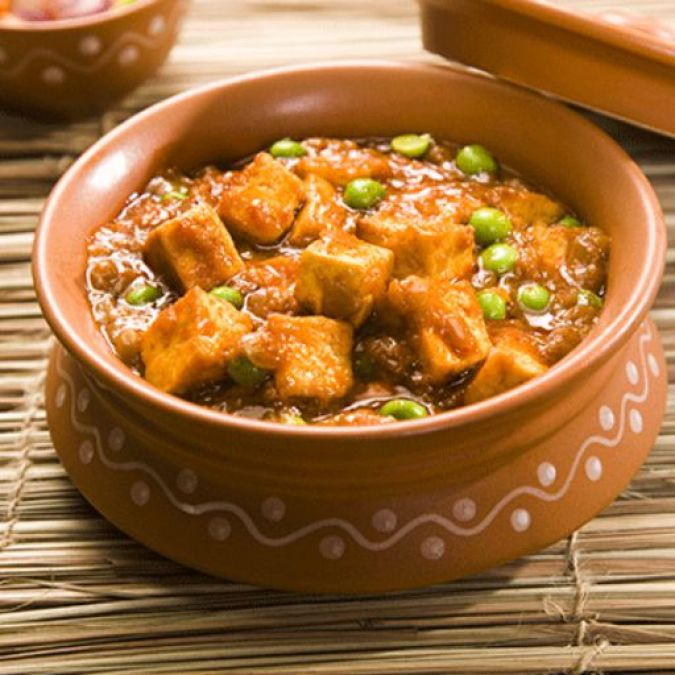

Back
Handipanner

Handi paneer is a traditional Indian dish consisting of paneer and creamy gravy cooked in a handi, a shallow Indian pot with a wide bottom. The gravy is made with cashews, ghee, onions, ginger, garlic, tomatoes, yogurt, and a variety of herbs and spices such as cinnamon, cloves, cardamom, coriander, turmeric, garam masala powder, and fenugreek leaves.
The gravy is prepared first, while the paneer is added near the end of cooking. This spicy curry is usually served with piping hot parathas, butter naan, or rice on the side. If desired, it can be garnished with chopped coriander leaves.
Ingredients
- 200 gms paneer
- 2 ginger, grated
- 1/2 tsp turmeric powder
- 1/2 tsp chilli powder
- 1/2 tsp garam masala powder
- 1 tomato
- 1/2 cup water
- 2 stalks coriander leaves
- 2 pinches powdered black pepper
- 4 tbsp refined oil
- 3 onion, chopped
- 1/2 cup beaten curd
Steps
- Put oil in a handi, stir fry the chopped onions on medium flame, when done, reduce the flame to low. Then add two pieces of grated ginger, turmeric powder, chilli powder, garam masala and mix well.
- Add the finely chopped tomato and green chilli, and cook on low flame for about 10 minutes.
- Add half cup beaten curd and cook till dry, before adding salt. Add half cup water and bring it to a boil.
- Mix in malai paneer and chopped coriander, cook till the masala dries.
- Add pepper and remove from the flame. Serve in a large bowl and sprinkle coriander leaves over the dish.